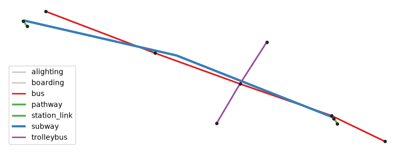
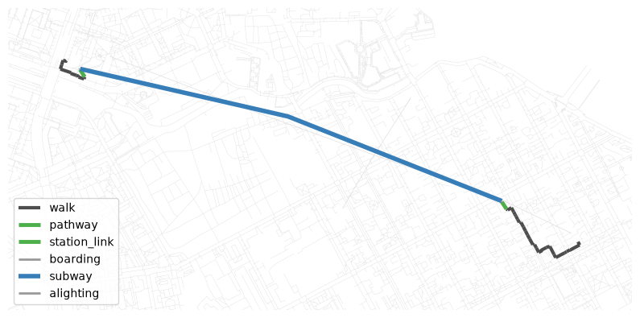

Общественный транспорт из GTFS¶
Этот ноутбук строит статические графы UrbanGraph общественного транспорта по фидам GTFS Schedule: читает и проверяет фид, выбирает день обслуживания и окно времени, объединяет несколько фидов одного города и присоединяет результат к пешеходной сети OpenStreetMap для маршрутизации.
Фиды — небольшие синтетические примеры с приблизительными координатами в Василеостровском районе Санкт-Петербурга, поэтому ноутбук работает без загрузки реального фида. Замените пути на собственные папки или ZIP-архивы GTFS.
# To install IduEdu in a clean environment:
# !pip install IduEdu
OSM_ID = 1114252
SERVICE_DATE = "2026-09-14" # a Monday
Примеры фидов¶
Три перевозчика публикуют собственные фиды, и каждый нумерует свой единственный маршрут как 1:
metro: две станции со входами, переходами-эскалаторами и зонами посадки, движение по
frequencies.txtкаждые 4 минуты и геометрия маршрута вshapes.txt;bus: пять остановок вдоль Среднего проспекта с отправлением по расписанию каждые 10 минут и без форм маршрута;
trolleybus: три остановки с отправлением по расписанию каждые 12 минут; его остановка на Среднем проспекте примерно в 10 м от автобусной.
import tempfile
from pathlib import Path
import pandas as pd
FEEDS_DIR = Path(tempfile.mkdtemp(prefix="iduedu_gtfs_"))
WEEKDAYS = {
"monday": 1, "tuesday": 1, "wednesday": 1, "thursday": 1, "friday": 1, "saturday": 0, "sunday": 0,
}
def write_feed(name, **tables):
"""Write GTFS tables given as lists of rows to FEEDS_DIR / name."""
folder = FEEDS_DIR / name
folder.mkdir(parents=True, exist_ok=True)
for table, rows in tables.items():
pd.DataFrame(rows).to_csv(folder / f"{table}.txt", index=False)
return folder
def agency_and_calendar(agency_name):
return {
"agency": [
{"agency_id": "A", "agency_name": agency_name, "agency_url": "https://example.org", "agency_timezone": "Europe/Moscow"}
],
"calendar": [{"service_id": "weekdays", **WEEKDAYS, "start_date": "20260101", "end_date": "20261231"}],
}
def clock(minutes):
return f"{minutes // 60:02d}:{minutes % 60:02d}:00"
def scheduled_trips(stop_ids, run_minutes, first, last, headway):
"""Trips in both directions, leaving every `headway` minutes between `first` and `last` (minutes after midnight)."""
trips, stop_times = [], []
for direction, (stops, runs) in enumerate([(stop_ids, run_minutes), (stop_ids[::-1], run_minutes[::-1])]):
for departure in range(first, last, headway):
trip_id = f"{direction}-{clock(departure)[:5]}"
trips.append({"route_id": "1", "service_id": "weekdays", "trip_id": trip_id, "direction_id": direction})
minute = departure
for sequence, stop_id in enumerate(stops):
minute += runs[sequence - 1] if sequence else 0
stop_times.append(
{"trip_id": trip_id, "arrival_time": clock(minute), "departure_time": clock(minute), "stop_id": stop_id, "stop_sequence": sequence + 1}
)
return trips, stop_times
def station(prefix, name, lat, lon):
"""A station with a platform, a boarding area on that platform, and a street entrance."""
def near(d_lat, d_lon):
return {"stop_lat": round(lat + d_lat, 6), "stop_lon": round(lon + d_lon, 6)}
return [
{"stop_id": prefix, "stop_name": name, **near(0, 0), "location_type": 1, "parent_station": ""},
{"stop_id": f"{prefix}_P", "stop_name": f"{name} platform", **near(-0.00005, -0.00005), "location_type": 0, "parent_station": prefix},
{"stop_id": f"{prefix}_BA", "stop_name": f"{name} boarding area", **near(-0.00004, -0.00002), "location_type": 4, "parent_station": f"{prefix}_P"},
{"stop_id": f"{prefix}_E", "stop_name": f"{name} entrance", **near(-0.00040, 0.00050), "location_type": 2, "parent_station": prefix},
]
primorskaya = (59.94860, 30.23450)
vasileostrovskaya = (59.94270, 30.27830)
metro_shape = [primorskaya, (59.94660, 30.25600), vasileostrovskaya]
metro_dir = write_feed(
"metro",
**agency_and_calendar("Metro"),
stops=station("PRI", "Primorskaya", *primorskaya) + station("VAS", "Vasileostrovskaya", *vasileostrovskaya),
routes=[{"route_id": "1", "agency_id": "A", "route_short_name": "M3", "route_long_name": "Line 3", "route_type": 1}],
trips=[
{"route_id": "1", "service_id": "weekdays", "trip_id": "to_vas", "direction_id": 0, "shape_id": "to_vas"},
{"route_id": "1", "service_id": "weekdays", "trip_id": "to_pri", "direction_id": 1, "shape_id": "to_pri"},
],
stop_times=[
{"trip_id": "to_vas", "arrival_time": "07:00:00", "departure_time": "07:00:00", "stop_id": "PRI_P", "stop_sequence": 1},
{"trip_id": "to_vas", "arrival_time": "07:04:00", "departure_time": "07:04:00", "stop_id": "VAS_P", "stop_sequence": 2},
{"trip_id": "to_pri", "arrival_time": "07:00:00", "departure_time": "07:00:00", "stop_id": "VAS_P", "stop_sequence": 1},
{"trip_id": "to_pri", "arrival_time": "07:04:00", "departure_time": "07:04:00", "stop_id": "PRI_P", "stop_sequence": 2},
],
frequencies=[
{"trip_id": trip_id, "start_time": "06:00:00", "end_time": "23:00:00", "headway_secs": 240}
for trip_id in ("to_vas", "to_pri")
],
shapes=[
{"shape_id": shape_id, "shape_pt_lat": lat, "shape_pt_lon": lon, "shape_pt_sequence": sequence}
for shape_id, points in (("to_vas", metro_shape), ("to_pri", metro_shape[::-1]))
for sequence, (lat, lon) in enumerate(points, start=1)
],
pathways=[
{"pathway_id": f"{prefix}_escalator", "from_stop_id": f"{prefix}_E", "to_stop_id": f"{prefix}_BA", "pathway_mode": 4, "is_bidirectional": 1, "traversal_time": seconds}
for prefix, seconds in (("PRI", 120), ("VAS", 150))
],
)
bus_stops = [
("B1", "1-ya Liniya", 59.94120, 30.28550),
("B2", "7-ya Liniya", 59.94285, 30.27790),
("B3", "16-ya Liniya", 59.94480, 30.26500),
("B4", "24-ya Liniya", 59.94670, 30.25300),
("B5", "Kosaya Liniya", 59.94930, 30.23750),
]
bus_trips, bus_stop_times = scheduled_trips([stop_id for stop_id, *_ in bus_stops], [3, 4, 3, 4], 7 * 60, 10 * 60, 10)
bus_dir = write_feed(
"bus",
**agency_and_calendar("Bus"),
stops=[{"stop_id": stop_id, "stop_name": name, "stop_lat": lat, "stop_lon": lon} for stop_id, name, lat, lon in bus_stops],
routes=[{"route_id": "1", "agency_id": "A", "route_short_name": "7", "route_type": 3}],
trips=bus_trips,
stop_times=bus_stop_times,
)
trolleybus_stops = [
("T1", "Bolshoy Prospekt", 59.94200, 30.26200),
("T2", "Sredny Prospekt", 59.94488, 30.26508),
("T3", "Maly Prospekt", 59.94780, 30.26850),
]
trolleybus_trips, trolleybus_stop_times = scheduled_trips([stop_id for stop_id, *_ in trolleybus_stops], [3, 3], 7 * 60, 10 * 60, 12)
trolleybus_dir = write_feed(
"trolleybus",
**agency_and_calendar("Trolleybus"),
stops=[{"stop_id": stop_id, "stop_name": name, "stop_lat": lat, "stop_lon": lon} for stop_id, name, lat, lon in trolleybus_stops],
routes=[{"route_id": "1", "agency_id": "A", "route_short_name": "10", "route_type": 11}],
trips=trolleybus_trips,
stop_times=trolleybus_stop_times,
)
sorted(path.name for path in FEEDS_DIR.iterdir())
['bus', 'metro', 'trolleybus']
Чтение и проверка фида¶
read_gtfs_feed загружает все таблицы папки или ZIP-архива как строки. validate_gtfs_feed проверяет обязательные таблицы и столбцы, уникальность идентификаторов и ссылки между таблицами и вызывает GTFSValidationError, если фид их нарушает. Функция построения графа сама выполняет ту же проверку.
from iduedu.gtfs import read_gtfs_feed, validate_gtfs_feed
metro_feed = read_gtfs_feed(metro_dir)
validate_gtfs_feed(metro_feed)
print(sorted(metro_feed.tables))
metro_feed["stops"]
['agency', 'calendar', 'frequencies', 'pathways', 'routes', 'shapes', 'stop_times', 'stops', 'trips']
| stop_id | stop_name | stop_lat | stop_lon | location_type | parent_station | |
|---|---|---|---|---|---|---|
| 0 | PRI | Primorskaya | 59.9486 | 30.2345 | 1 | |
| 1 | PRI_P | Primorskaya platform | 59.94855 | 30.23445 | 0 | PRI |
| 2 | PRI_BA | Primorskaya boarding area | 59.94856 | 30.23448 | 4 | PRI_P |
| 3 | PRI_E | Primorskaya entrance | 59.9482 | 30.235 | 2 | PRI |
| 4 | VAS | Vasileostrovskaya | 59.9427 | 30.2783 | 1 | |
| 5 | VAS_P | Vasileostrovskaya platform | 59.94265 | 30.27825 | 0 | VAS |
| 6 | VAS_BA | Vasileostrovskaya boarding area | 59.94266 | 30.27828 | 4 | VAS_P |
| 7 | VAS_E | Vasileostrovskaya entrance | 59.9423 | 30.2788 | 2 | VAS |
Граф для одного дня обслуживания¶
service_date оставляет рейсы, календарь которых действует в этот день. start_time и end_time отбирают отправления, по которым оценивается ожидание посадки: для движения по расписанию ожидание равно половине среднего интервала между отправлениями, поэтому автобус, уходящий каждые 10 минут, получает ребро boarding на 5 минут. Ребро движения транспорта получает медиану времени по расписанию между двумя его остановками.
from iduedu import get_gtfs_public_transport_graph
bus_graph = get_gtfs_public_transport_graph(bus_dir, service_date=SERVICE_DATE, start_time="07:00", end_time="10:00")
print(bus_graph)
bus_graph.edges_gdf["type"].value_counts()
UrbanGraph(nodes=15, edges=28, is_multigraph=True, is_directed=True, edge_direction_column='oneway', crs='EPSG:32636', type='public_transport')
type
boarding 10
alighting 10
bus 8
Name: count, dtype: int64
bus_edges = bus_graph.edges_gdf
bus_edges.loc[bus_edges["type"].isin(["boarding", "bus"]), ["type", "route", "length_meter", "time_min"]].head(6)
| type | route | length_meter | time_min | |
|---|---|---|---|---|
| 0 | boarding | 7 | 0.000000 | 5.0 |
| 2 | bus | 7 | 654.547498 | 3.0 |
| 3 | boarding | 7 | 0.000000 | 5.0 |
| 5 | bus | 7 | 1064.862804 | 4.0 |
| 6 | boarding | 7 | 0.000000 | 5.0 |
| 8 | bus | 7 | 994.515679 | 3.0 |
У автобусного фида нет форм маршрута, поэтому каждое ребро движения — прямая между двумя остановками, а его length_meter — длина этой прямой, умноженная на √2, чтобы приблизить путь по улицам.
День без движения даёт пустой граф и предупреждение:
sunday_graph = get_gtfs_public_transport_graph(bus_dir, service_date="2026-09-13")
print(sunday_graph)
2026-10-22 17:05:47.920 | WARNING | No GTFS trips match the requested service date or period
UrbanGraph(nodes=0, edges=0, is_multigraph=True, is_directed=True, edge_direction_column='oneway', crs=None, type='public_transport')
Средний день¶
Без service_date в граф попадают все варианты маршрутов, которые ходят хотя бы в один день, а ожидание посадки — ожидание среднего дня: ожидание каждого дня обслуживания рассчитывается только по рейсам этого дня и затем усредняется с одинаковым весом каждого календарного дня. Дни берутся из собственного календаря фида или из service_period=(first, last), например одной эталонной недели.
Чтобы увидеть разницу, зададим автобусу расписание выходного дня: каждые 20 минут по субботам и воскресеньям вместо каждых 10.
WEEKENDS = {day: 1 - runs for day, runs in WEEKDAYS.items()}
weekend_trips, weekend_stop_times = scheduled_trips([stop_id for stop_id, *_ in bus_stops], [3, 4, 3, 4], 7 * 60, 10 * 60, 20)
for row in weekend_trips + weekend_stop_times:
row["trip_id"] = f"weekend-{row['trip_id']}"
for trip in weekend_trips:
trip["service_id"] = "weekends"
bus_tables = agency_and_calendar("Bus")
bus_week_dir = write_feed(
"bus_week",
agency=bus_tables["agency"],
calendar=bus_tables["calendar"] + [{"service_id": "weekends", **WEEKENDS, "start_date": "20260101", "end_date": "20261231"}],
stops=[{"stop_id": stop_id, "stop_name": name, "stop_lat": lat, "stop_lon": lon} for stop_id, name, lat, lon in bus_stops],
routes=[{"route_id": "1", "agency_id": "A", "route_short_name": "7", "route_type": 3}],
trips=bus_trips + weekend_trips,
stop_times=bus_stop_times + weekend_stop_times,
)
WEEK = ("2026-09-14", "2026-09-20") # Monday to Sunday
for label, days in {
"Monday": {"service_date": "2026-09-14"},
"Saturday": {"service_date": "2026-09-19"},
"average day of the week": {"service_period": WEEK},
}.items():
day_graph = get_gtfs_public_transport_graph(bus_week_dir, start_time="07:00", end_time="10:00", **days)
day_edges = day_graph.edges_gdf
print(f"{label:>24}: boarding wait {day_edges.loc[day_edges['type'] == 'boarding', 'time_min'].median():.2f} min")
Monday: boarding wait 5.00 min
Saturday: boarding wait 10.00 min
average day of the week: boarding wait 6.43 min
Пять будних дней по 5 минут и два выходных по 10 минут дают (5·5 + 2·10) / 7 ≈ 6,4 минуты. Интервал всегда считается только между отправлениями одного дня, поэтому расписания будних и выходных дней никогда не перемешиваются в интервалы, которых не видит ни один пассажир. service_dates=[...] вместо этого явно перечисляет дни, например эталонную неделю плюс собственные недели объединённых источников, которые в ту неделю не действовали.
Объединение нескольких фидов¶
Простое соединение трёх фидов привязало бы рейсы трёх перевозчиков к одному route_id 1. merge_gtfs_feeds дополняет каждый идентификатор именем источника, здесь — именем папки, и переписывает ссылки вместе с определениями. Функция построения графа делает то же самое, когда получает список фидов.
from iduedu import merge_gtfs_feeds
merged = merge_gtfs_feeds([metro_dir, bus_dir, trolleybus_dir])
merged["routes"][["route_id", "route_short_name", "route_type"]]
| route_id | route_short_name | route_type | |
|---|---|---|---|
| 0 | metro:1 | M3 | 1 |
| 1 | bus:1 | 7 | 3 |
| 2 | trolleybus:1 | 10 | 11 |
Учёт повторяющихся фидов один раз¶
Фиды из нескольких каталогов часто пересекаются: один и тот же фид опубликован дважды или национальный фид повторяет городского оператора. Если объединить их как есть, копии получат собственные дополненные идентификаторы, и каждый рейс будет выполняться дважды. deduplicate=True сливает платформы разных источников ближе duplicate_platform_tolerance (по умолчанию 0,5 м) и отбрасывает рейсы, которые другой источник уже проводит через те же платформы в то же время. Платформы одного фида никогда не сливаются друг с другом.
import shutil
bus_mirror_dir = shutil.copytree(bus_dir, FEEDS_DIR / "bus_mirror")
doubled = merge_gtfs_feeds([bus_dir, bus_mirror_dir])
deduplicated = merge_gtfs_feeds([bus_dir, bus_mirror_dir], deduplicate=True)
for table in ("stops", "trips"):
print(f"{table}: {len(doubled[table])} merged as they are, {len(deduplicated[table])} deduplicated")
stops: 10 merged as they are, 5 deduplicated
trips: 72 merged as they are, 36 deduplicated
Ожидание посадки по маршрутам¶
Для движения по расписанию ожидание равно половине среднего интервала. Для движения по frequencies.txt ожидание — headway_secs / 120 минут, поэтому метро, идущее каждые 240 секунд, получает ожидание 2 минуты.
edges.loc[edges["type"] == "boarding"].groupby("route")["time_min"].median()
route
10 6.0
7 5.0
M3 2.0
Name: time_min, dtype: float64
Станции¶
Фид метро описывает каждую станцию вплоть до зоны посадки. Вход с улицы ведёт через эскалатор pathway к зоне посадки, а station_link нулевой стоимости соединяет зону посадки с её платформой. Поскольку на платформу попадают через станцию, тип её узла — station_platform, и к пешеходной сети потом присоединяется только вход (station_entry_exit).
edges.loc[edges["type"].isin(["pathway", "station_link"]), ["type", "u", "v", "length_meter", "time_min", "oneway"]]
| type | u | v | length_meter | time_min | oneway | |
|---|---|---|---|---|---|---|
| 54 | pathway | 6 | 5 | 49.524590 | 2.0 | False |
| 55 | pathway | 9 | 8 | 49.527140 | 2.5 | False |
| 56 | station_link | 5 | 7 | 2.012799 | 0.0 | False |
| 57 | station_link | 8 | 10 | 2.013028 | 0.0 | False |
График графа¶
import matplotlib.pyplot as plt
EDGE_STYLE = {
"subway": ("#377eb8", 3.0),
"bus": ("#e41a1c", 2.0),
"trolleybus": ("#984ea3", 2.0),
"pathway": ("#4daf4a", 2.5),
"station_link": ("#4daf4a", 2.5),
"boarding": ("#999999", 1.0),
"alighting": ("#999999", 1.0),
}
fig, ax = plt.subplots(figsize=(10, 6))
for edge_type, group in edges.groupby("type"):
color, width = EDGE_STYLE.get(edge_type, ("#bdbdbd", 1.0))
group.plot(ax=ax, color=color, linewidth=width, label=edge_type)
nodes = public_transport.nodes_gdf
nodes.loc[nodes["type"].isin(["platform", "station_platform", "station_entry_exit"])].plot(
ax=ax, color="#222222", markersize=14, zorder=3
)
ax.legend(loc="lower left")
ax.set_axis_off()
plt.show()

Объединение с пешеходной сетью¶
Сначала постройте пешеходный граф и передайте его систему координат в функцию построения по GTFS, чтобы оба слоя были в одной метрической проекции. Затем join_pt_walk_graph присоединяет платформы и входы станций к ближайшим пешеходным рёбрам.
from iduedu import get_walk_graph, join_pt_walk_graph
walk = get_walk_graph(osm_id=OSM_ID)
public_transport = get_gtfs_public_transport_graph(
fused, service_date=SERVICE_DATE, start_time="07:00", end_time="10:00", crs=walk.crs
)
intermodal = join_pt_walk_graph(public_transport, walk, max_dist=50)
intermodal
2026-10-22 17:06:07.529 | WARNING | Removing 326 nodes outside the largest connected component. Retaining 19700 of 20026 nodes.
UrbanGraph(nodes=19739, edges=26593, is_multigraph=True, is_directed=True, edge_direction_column='oneway', crs='EPSG:32636', type='intermodal')
Маршрут через слои¶
Возьмём пешеходные узлы, ближайшие к точке у «Приморской» и к точке на 1-й линии, найдём между ними самый быстрый маршрут и превратим его в рёбра, чтобы увидеть, как время делится между ходьбой, ожиданием и поездкой.
import geopandas as gpd
from shapely.geometry import Point
from iduedu import path_to_edges
points = gpd.GeoSeries([Point(30.2330, 59.9490), Point(30.2860, 59.9410)], crs=4326).to_crs(intermodal.crs)
walk_nodes = intermodal.nodes_gdf.loc[intermodal.nodes_gdf["type"].isna()]
origin, destination = walk_nodes.index[walk_nodes.sindex.nearest(points)[1]]
journey = intermodal.single_source_dijkstra(
origin, target_nodes=[destination], weight="time_min",
output="both", path_storage="lazy",
)
path = journey.get_path(destination)
route = path_to_edges(intermodal, path or [])
print(f"travel time: {journey.distances.loc[destination]:.1f} min")
route.groupby("type", sort=False)["time_min"].sum().round(1)
travel time: 21.4 min
type
walk 10.9
pathway 4.5
station_link 0.0
boarding 2.0
subway 4.0
alighting 0.0
Name: time_min, dtype: float64
fig, ax = plt.subplots(figsize=(10, 6))
intermodal.edges_gdf.plot(ax=ax, color="#e0e0e0", linewidth=0.3)
for edge_type, group in route.groupby("type", sort=False):
color, width = EDGE_STYLE.get(edge_type, ("#4d4d4d", 2.0))
group.plot(ax=ax, color=color, linewidth=width + 1, label=edge_type)
xmin, ymin, xmax, ymax = route.total_bounds
ax.set_xlim(xmin - 300, xmax + 300)
ax.set_ylim(ymin - 300, ymax + 300)
ax.legend(loc="lower left")
ax.set_axis_off()
plt.show()
